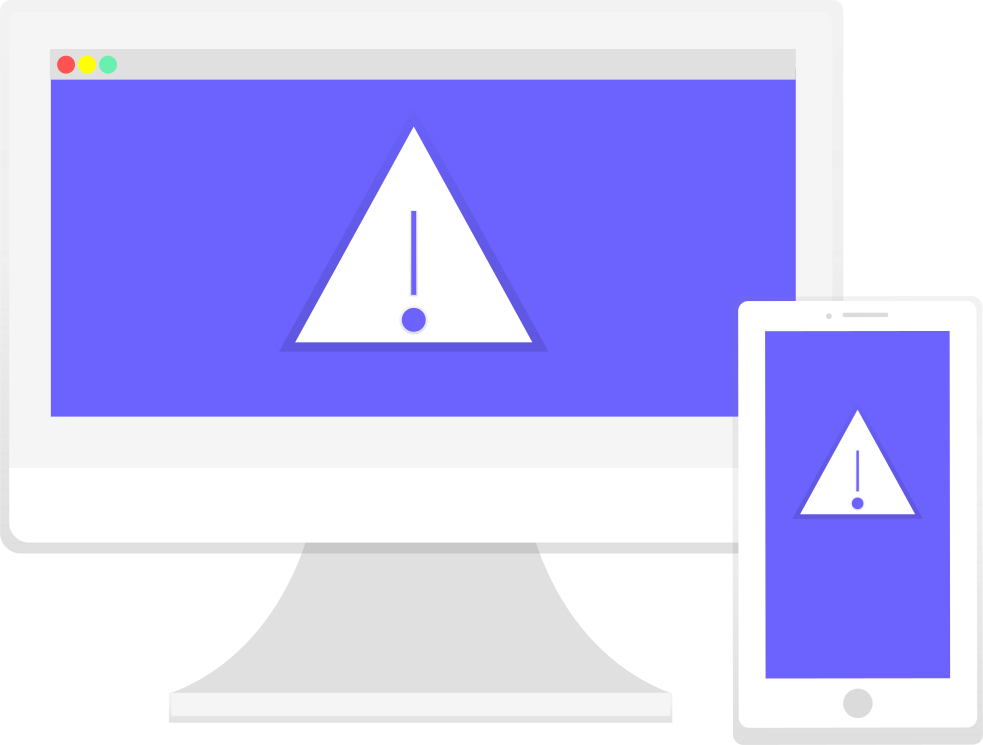

What is Malware, and why should you care about it?
Malware is any software that is especially designed to cause harm. It includes but not limited to viruses, worms, spyware, adware, trojans, ransomware etc. It can be used to steal data, spy on people, destroy data etc. Programs are also considered malware if they secretly act against the interests of the computer user. For example, a camera app using the microphone.
Some types of malware
Virus
A computer virus is a program that can replicate itself and attach it to other programs or files. They can do many things from destroying data to taking the blank space of the hard drives. Viruses generally require a host program. The virus writes its own code into the host program. When the program runs, the written virus program is executed first, causing infection and damage.
Worm
A worm is a type of malware that doesn't need a host program to function means they are standalone programs. It spread by computer networks. Because a worm is not limited by the host program, worms can take advantage of various operating system vulnerabilities to carry out active attacks.
Trojan horse
Trojan horse or trojan is any malware which look like legitimate software, but its purpose is to harm the computer. Trojans don't try to inject themselves into other files or programs.
Spyware
Spyware is a type of malware that is especially designed for spying. It is a very harmful type of malware. It secretly monitors all the activity on the device, gathers information and send it to another entity.
Ransomware
Ransomware is a malware that can encrypt all the data on your computer. After taking control of your data it asks for ransom to get back your data.
How to be protected from malware
- Use antivirus softwares.
- Keep your operating system and browsers up-to-date.
- Use trusted sources for downloading.
- Don't open attachments received from unknown emails.